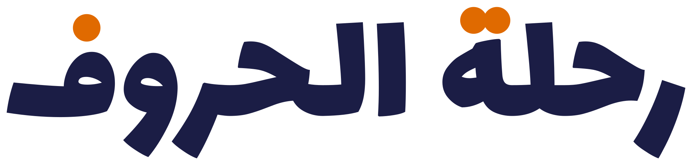

عن الموقع ←«رحلة الحروف» موقع مجاني يعلّم الأطفال قراءة القرآن الكريم على منهج «القاعدة الذهبية». نريده أن يسمع الطفل ويقول له: أحسنت، أو: أعد. ولكي يتعلّم ذلك يحتاج أصواتاً صحيحة من أناس كثيرين، كباراً وصغاراً. صوتك يساعده.
🎙️ ادخل الاستوديوواختر: صوت بالغ أو طفل، والعمر إن شئت.
4 حروف تكفي (نحو 10 دقائق)، أو كلها على مهل.
اضغط 🎙️ واقرأ المقطع الظاهر مرة واحدة بوضوح.
في النهاية تقرأ الموافقة، وتختار: نعم أوافق، أو لا.
لكل حرف ثلاث حركات. وفي الاستوديو طريقتان للقراءة (سجّل الاثنتين إن استطعت):
| الحركة | المقطع وحده | التهجئة كما في الكتاب |
|---|---|---|
| الفتحة | بَ | با فتحة بَ |
| الكسرة | بِ | با كسرة بِ |
| الضمة | بُ | با ضمة بُ |
«بِ» تُقرأ كأول صوت في «بِنت»، و«بَ» كأول صوت في «بَحر»، و«بُ» كأول صوت في «بُرتقال». مرة واحدة، بلا تكرار.
غرفة هادئة: بلا تلفاز ولا مروحة قريبة.
الجوال قريب من الفم (نحو شبر)، وبالصوت المعتاد.
اسمع تسجيلك بـ ▶، وإن لم يكن واضحاً احذفه بـ ↶ وأعده.
صوت الأطفال مهم جداً: إن كان عندك طفل يقرأ صحيحاً، سجّل معه.
جزاكم الله خيراً على كل حرف يُتعلَّم بصوتكم 🌱
رحلة الحروف · من إنشاء م. كريم عادل اللوح · Created by Eng. Kareem Adel Allouh